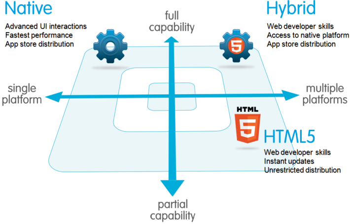
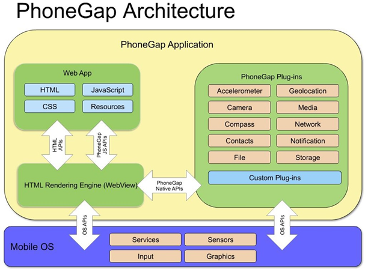
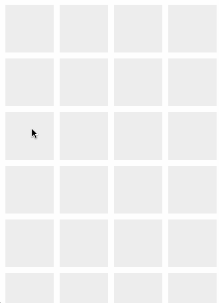
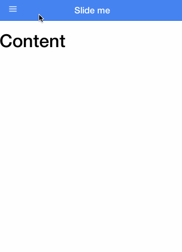

Mobile Applications
with JS & Ionic
Created by Josh Bavari / @jbavari
Assumptions
- You know HTML / CSS / JS
- You want to build iOS & Android mobile apps
- You may or may not understand native dev on iOS & Android
Why I am here
My goal is to educate
I can only tell you what I know from my experience.
I am trying to educate you, so you can make educated decisions.
Current State of Mobile Development
- Basic CRUD apps - some 90% of the market
- Graphic Intensive apps (games/simulations)
Approaches for Mobile Development
- Native Code - Obj-C / Swift or Java
- Translates to native - RubyMotion / Titanium / Xamarin
- JavaScript that bridges to Native
Approaches
We call them 'Hybrid Apps'
HTML, CSS, JS
Native WebView
Native plugins
Native Implementation
When to go with Native / Translated?
- Intensive graphics app
- Niche use cases
- Afford to support multiple code bases / devs
When to go with Hybrid
- CRUD app (for the most part)
- Support multiple platforms
- Single code bases
Hybrid can still use native code!
- Plugins allow native functionality
- Plugins = Camera, GPS, Facebook, ETC
- Plugins = JS -> Native
Hybrid Development Kit
How it works
PhoneGap == Cordova
- Cordova is an Apache project (OS)
- PhoneGap is powered by Cordova
- PhoneGap is owned by Adobe
- PhoneGap provides additional services
- I'll use Cordova / PhoneGap interchangibly
Getting started with Hybrid Dev
Problems you face with Hybrid Dev
- Getting Native SDKs set up
- Having a common starting place
- Setting up mobile app states
- Templates for HTML/Sass/CSS
- Handling some native look/feel
- Using Plugins
Solutions Ionic Provides
Additional conveniences from Ionic
- Convention over configuration
- Keyboard plugin - native hide/show/utility
- Native scrolling
- Error handling / catchers
- App ready event
- collection-repeat - render lists of tons of items with no performance hit
Did I mention
it comes with ICONS?!
Ionic Framework gives the happy path
- Built with AngularJS
- Huge community support
- Framework with UI elements - list, buttons, icons
- JS controls with delegates
- Frequent release cycles
Getting Started with Ionic
// Install what we need
npm install -g ionic cordova
// Set up boilerplate
ionic start new_app tabs
cd new_app
// Add platforms as needed
cordova platform add ios
Another Ionic sample
ionic start new_app sidemenu
What was set up?
- Bower
- npm
- Customizable SASS sheet - ionic.app.scss
- Gulpfile - tasks for sass compilation & watching
- Boilerplate App
What about the boilerplate app?
- www folder - with css, img, js, lib, templates
- js/app.js - app routing for states / templates
- js/controllers.js - Angular JS Controllers
- js/services.js - AngularJS services
Development Cycle
- Run in the browser - ionic serve
- Run on native simulator - ionic emulate ios/android
- Run on native device - ionic run ios
- Bonus - Livereload web / native with --livereload flag
Top notch documentation
Let's look at it
Action sheets
Side menus
Slide boxes

Let's peek at boilerplate code
angular.module('starter', ['ionic', 'starter.controllers', 'starter.services'])
.run(function($ionicPlatform) {
$ionicPlatform.ready(function() {
// Hide the accessory bar by default (remove this to show the accessory bar above the keyboard
// for form inputs)
if(window.cordova && window.cordova.plugins.Keyboard) {
cordova.plugins.Keyboard.hideKeyboardAccessoryBar(true);
}
if(window.StatusBar) {
// org.apache.cordova.statusbar required
StatusBar.styleDefault();
}
});
})
.config(function($stateProvider, $urlRouterProvider) {
// Ionic uses AngularUI Router which uses the concept of states
// Learn more here: https://github.com/angular-ui/ui-router
// Set up the various states which the app can be in.
// Each state's controller can be found in controllers.js
$stateProvider
// setup an abstract state for the tabs directive
.state('tab', {
url: "/tab",
abstract: true,
templateUrl: "templates/tabs.html"
})
// Each tab has its own nav history stack:
.state('tab.dash', {
url: '/dash',
views: {
'tab-dash': {
templateUrl: 'templates/tab-dash.html',
controller: 'DashCtrl'
}
}
})
.state('tab.friends', {
url: '/friends',
views: {
'tab-friends': {
templateUrl: 'templates/tab-friends.html',
controller: 'FriendsCtrl'
}
}
})
.state('tab.friend-detail', {
url: '/friend/:friendId',
views: {
'tab-friends': {
templateUrl: 'templates/friend-detail.html',
controller: 'FriendDetailCtrl'
}
}
})
.state('tab.account', {
url: '/account',
views: {
'tab-account': {
templateUrl: 'templates/tab-account.html',
controller: 'AccountCtrl'
}
}
});
// if none of the above states are matched, use this as the fallback
$urlRouterProvider.otherwise('/tab/dash');
});
angular.module('starter.services', [])
/**
* A simple example service that returns some data.
*/
.factory('Friends', function() {
// Might use a resource here that returns a JSON array
// Some fake testing data
var friends = [
{ id: 0, name: 'Scruff McGruff' },
{ id: 1, name: 'G.I. Joe' },
{ id: 2, name: 'Miss Frizzle' },
{ id: 3, name: 'Ash Ketchum' }
];
return {
all: function() {
return friends;
},
get: function(friendId) {
// Simple index lookup
return friends[friendId];
}
}
});
angular.module('starter.controllers', [])
.controller('DashCtrl', function($scope) {
})
.controller('FriendsCtrl', function($scope, Friends) {
$scope.friends = Friends.all();
})
.controller('FriendDetailCtrl', function($scope, $stateParams, Friends) {
$scope.friend = Friends.get($stateParams.friendId);
})
.controller('AccountCtrl', function($scope) {
});
Where to find plugins
Let others see your app!
- PhoneGap developer app
- Ionic View app
- Publishing to web - Safari / Chrome / Browser
Let others install your app!
Debugging
- Full debugger support
- iOS - Safari Inspector Tools
- Android - Chrome Developer Tools
- Older Android - Weinre
- Web Browser - any inspector tools
Error reporting
- Tons of JS Reporters, use your favorite